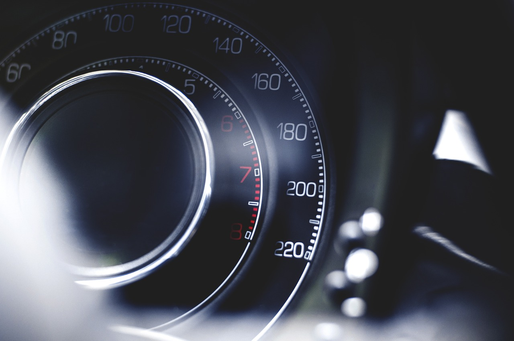

Ремонт трансмісії
Ремонт електрики
Ремонт кузова
Ремонт двигуна
Ремонт підвіски
Ремонт гальмівної системи
Ремонт пневмо системы
Ремонт рульового управління
Немає нічого гіршого, ніж постійний стукіт у підвісці. Далека поїздка і відсутність впевненості в автомобілі - найжахливіше, що можливо. Скриплять колодки, пробиває амортизатор, тягне в бік. у всіх цих проблемах ми розберемося. Зробимо все, що потрібно, щоб ваші нерви були спокійні, а близькі в безпеці.
У сервісі Центральний ми проводимо капітальний ремонт вузлів і агрегатів будь-якої складності. Пропонуємо весь спектр послуг з діагностики та ремонту ходової частини, гальмівної системи, рульового управління. У нашому арсеналі спеціалізовані інструменти і команда професіоналів, сертифікованих і з досвідом роботи у офіційних дилерів.
Зручна зона очікування, чай і кава для клієнтів. Шиномонтаж, мийка, послуги шинного готелю - зберігання шин і коліс у зборі.
Ефективне управління автомобільним сервісом неможливе, якщо брати до уваги лише витрати для його функціонування. Під автомобільним сервісом мається на увазі СТО різного рівня та потужності, що включає зокрема механічні, кузовні та фарбувальніі роботи, а також більший обсяг послуг з даної сфери.
У великих, більш складних організаціях системи управління відділами, як правило, впорядковані. Найбільше проблем виникає у невеликих фірмах, де власник одночасно є директором і постачальником, а іноді також механіком або маляром. У шиномонтажних майстернях він працює на одному рівні зі своїми підлеглими (у сезони заміни шин). У такій системі важко знайти час, сили та бажання постійно аналізувати витрати. І в таких компаніях виникають додаткові труднощі, серед іншого і з бухгалтерським обліком. Найчастіше йдеться про спрощену бухгалтерію, що ведеться на базі обліку доходів та витрат. Такий метод обліку суттєво ускладнює, а іноді навіть робить неможливим правильний аналіз як витрат, так і доходів.
Ніхто не вимагає від власників бізнесу глибоких економічних знань, але вони повинні розуміти, що таке витрати та як вони впливають на функціонування компанії. Такі знання дозволяють контролювати витрати в різних системах та на різних рівнях їх формування. При спрощеному обліку відсутні субрахунки можна замінити індивідуально підготовленими таблицями, але для цього потрібно хоча би мінімально знати про витрати. Найбільш поширений поділ на витрати за видами, які реєструються, залежно від того, де вони виникають, на окремих субрахунках. Операційні витрати (поділені на прямі та непрямі, з окремими витратами на зарплату) є основою для аналізу витрат на функціонування автосервісу або всієї компанії. Ідеальною була б можливість визначати частку окремих видів витрат у загальних операційних витратах СТО. Це дало б основу для аналізу, як впливають зміни окремих видів витрат на результат сервісу, включаючи, головним чином, рівень витрат на людину-годину.Крім операційних витрат, під особливим контролем повинні перебувати накладні витрати. Це витрати, що виникають незалежно від основної діяльності автомайстерні. Вони включають, серед іншого, витрати на бухгалтерський облік, рекламну або іншу ділову діяльність, наприклад, послуги евакуатора. Одним із елементів накладних витрат є також амортизація основних фондів. Іноді витрати на амортизацію обліковуються по-різному, але вони, як правило, застосовуються в усьому світі і майже в усіх компаніях. Підвищення амортизації основних фондів може призвести до надмірних витрат, збільшення вартості людино-години і, як наслідок, зниження рентабельності послуги. Підводячи підсумок, облік – це не лише аналіз витрат.
Вартість людино-години – це вартість проданої послуги, яку виконала одна людина за одну робочу годину. Слово «проданої» може викликати певні сумніви, адже як це зрозуміти? Чому проданий час, а не, наприклад, відпрацьований співробітником (механіком чи малярем) або навіть година присутності на робочому місці? Ну, тому що, лише продані клієнтам години дають можливість заробляти на послугах. Не важливо, як довго співробітники працюють або скільки часу вони витрачають на ремонт, важливо лише те, скільки часу продано клієнтам. Замовник не платить за простої, спричинені відсутністю деталей, або поганою організацією роботи, або за інші необґрунтовані технологічні перерви. Тому поняття людино-години стосується не однієї календарної години, а технологічного часу ремонту транспортних засобів, наприклад, при використанні системи Audatex, Eurotax або DAT, в яких прописані нормо-години виконання певних технологічних операцій.
Найпростіший спосіб оцінити вартість людино-годин на СТО – це визначити суму всіх витрат, які виникають за окремий проміжок часу, і поділити їх на суму всіх проданих за цей період людино-годин. Значення, обчислене таким чином, є приблизним відображенням витрат на продаж кожної людино-години протягом періоду, якого цей розрахунок стосується. При такому підрахунку вартість людино-години обтяжується помилкою, що виникає внаслідок неточного визначення фактично понесених витрат та не враховування всіх елементів проданого часу. Розрахунок вартості людино-години є основою для визначення правильного значення нормо-години з проведення робіт з ремонту або обслуговування автомобіля. Додавання маржі до розрахованої людино-години дозволяє встановити ставку, яка не тільки забезпечить покриття понесених витрат, але також дозволить вам отримати прибуток, гарантуючи можливість конкурувати на ринку автомобільних послуг і не відставати від змін у виробництві транспортних засобів, які вимагають модернізації спеціалізованих інструментів у майстерні. Підвищена обізнаність власників бізнесу стосовно витрат на людино-годину та визначення нормо-години на сервісні операції призводить до розуміння можливих напрямків розвитку та розширення бізнесу.

За багаторічну історію розвитку та успішної роботи, спеціалісти СТО Автопан накопичили великий досвід у ремонті та обслуговуванні легкового та комерційного транспорту. Постійне оновлення виробничої бази, впровадження сучасних методів та технологій ремонту дозволяють нам швидко та якісно проводити ремонт легкових авто. Кваліфіковані майстри виконують всі види ремонтних робіт легкового авто за стандартами виробників транспортних засобів.
Поточний ремонт поділяють на поточний ремонт автомобіля та поточний ремонт агрегатів, вузлів та механізмів. Поточний ремонт агрегату полягає в усуненні несправностей, заміною або ремонтом пошкоджених деталей, крім базових. При поточному ремонті усувають пошкодження та дрібні несправності, виявлені під час огляду автомобіля при технічному обслуговуванні або за заявкою автовласника.
Капітальний ремонт – це ремонт авто, під час якого проводиться повне розбирання та дефектування машини. А також заміна та ремонт усіх несправних агрегатів, вузлів, приладів та деталей. Потім складання та випробування авто.
Середній ремонт – це ремонт, під час якого проводиться заміна чи ремонт зношених і пошкоджених агрегатів, вузлів, приладів і деталей. А також обов’язковою перевіркою технічного стану та усунення несправностей інших агрегатів і вузлів. Виконуються також усі необхідні спеціальні роботи та технічне обслуговування автомобіля.
Агрегатний метод ремонту – це ремонт автмобіля, при якому несправні агрегати замінюють на нові або відремонтовані. Сутність даного методу полягає в тому, що при втраті автомобілем працездатності його ремонт проводиться заміною окремих несправних агрегатів і вузлів відремонтованими або новими. Внаслідок чого справність автомобіля відновлюється при мінімальних витратах автовласника.